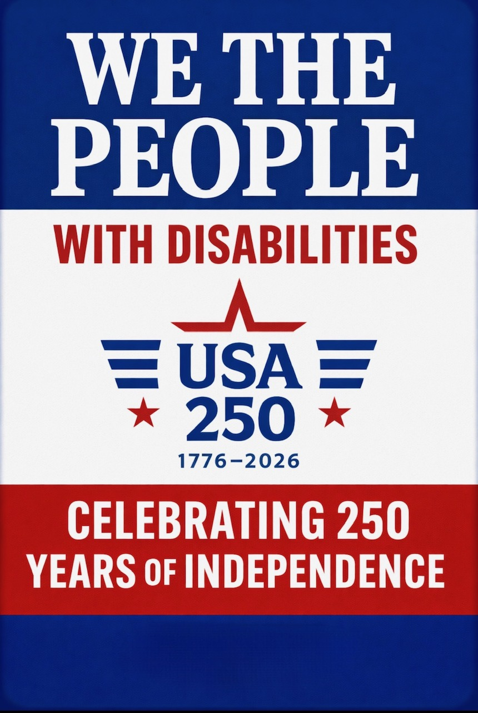

Our project for this year, the 250th Anniversary of America's independence, is to recruit partners and sponsors and to build our network for future projects.
Our Intention: To celebrate the 250th Anniversary of our country by recognizing people with disabilities as part of the "We" in the concept of "We The People."
This recognition will include the publishing of a Declaration of Interdependence on July 4, 2026, and the announcement that Able250 will create two hundred and fifty new ABLE account holders throughout the country.

Tell the story of how Americans with disabilities have shaped our founding ideals. We're awarding $1,000 in prizes for the best 500–800 word essays on the theme A Declaration of Interdependence.
Open to U.S. residents age 16 and older. Submit online through our form — it takes just a few minutes.
We want you to support and sponsor an announcement of your own. We want to add your name to the effort and to reach out to your communities of influence to help us reach the goal of 250 new account holders.
Organization Visibility — tied to America's 250th anniversary, a rare, high-profile patriotic moment that resonates nationwide.
Positive Community Impact — your name and logo linked to our Declaration of Interdependence, which honors the historic contributions of people with disabilities.
Marketing & PR Opportunity — exposure through our events, announcements, social media, website, and media coverage at the July 4, 2026 launch and beyond.
Use our striking We the People...with Disabilities design on your website and marketing material and link to our landing page.
Read our blogs highlighting aspects of the history of participation by people with disabilities in shaping America's march to a more perfect union.
Share your good stories for distribution throughout our nationwide networks.
Help identify and distribute funds to open ABLE accounts in populations you choose.
We are drafting a Declaration of Interdependence — a proclamation that recognizes people with disabilities as an essential part of "We The People." We invite you to preview the draft and share your feedback before we publish it on July 4, 2026.
There are many ways to be part of this historic moment. Advocate for inclusion, partner with us, or download our logo to show your support.
Help amplify the voices of people with disabilities as we mark this milestone. Share our mission with your community, elected officials, and social networks.
Contact UsOrganizations and businesses can align with Able250 to support disability inclusion as part of the Semiquincentennial celebration. Together, we can drive lasting impact.
Become a PartnerUse our We The People...with Disabilities logo on your website and materials. Add your organization's name in the blue bar at the bottom to co-brand.
Download Logo{kind=link}